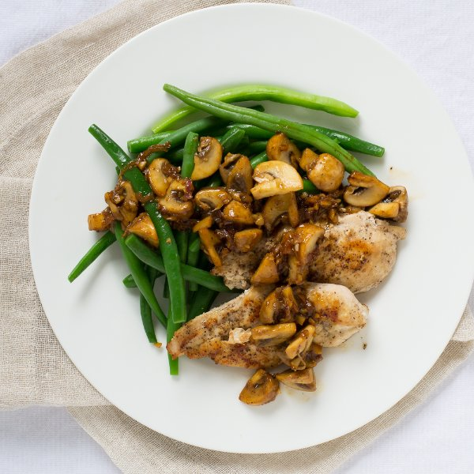

Seared Chicken Breast with Green Beans & Sautéed Mushrooms

Nutrition (per serving)
453.7 kcalCalories
45.7 gProtein
20.3 gCarbs
22.6 gFat
Full nutrition table
| Calories | 453.7 kcal |
| Total fat | 22.6 g |
| Saturated fat | 12.1 g |
| Trans fat | 0.7 g |
| Cholesterol | 169.9 mg |
| Sodium | 99.3 mg |
| Carbohydrates | 20.3 g |
| Fiber | 6.5 g |
| Sugars | 9.2 g |
| Protein | 45.7 g |
| Potassium | 1364.3 mg |
| Calcium | 96.4 mg |
| Iron | 3.3 mg |
| Vitamin A | 1222.9 IU |
| Vitamin C | 29.8 mg |
| Vitamin D | 22.4 IU |
Cookware
Ingredients
- 1 ½ lbchicken breasts, boneless skinless
- 4 clovesgarlic
- 1 ½ lbgreen beans
- 1lemon
- 2shallots
- 1 lbwhite mushrooms
- black pepper
- butter, unsalted
- salt
Steps
- Wash and dry the fresh produce.1 ½ lb green beans
1 lb white mushrooms
1 lemon - Trim and discard the ends of the green beans; transfer to a medium bowl.
- Cut off the mushroom stem ends, then quarter the mushrooms lengthwise from cap to stem (you may need to cut them further if the mushrooms are large). Transfer everything to a medium bowl.
- Trim off and discard the ends of the shallots; peel and halve the shallots lengthwise, then thinly slice crosswise into half-rounds. Transfer to a small bowl.2 shallots
- Trim off and discard the root ends of the garlic; peel and mince or press the garlic and add to the bowl with the shallot.4 cloves garlic
- Preheat a skillet over medium heat.
- While the skillet heats up, holding a knife parallel to the cutting board, cut the chicken in half horizontally to form thin fillets.1 ½ lb chicken breasts, boneless skinless
- Season the chicken with salt and pepper on both sides.1 tsp salt
1 tsp black pepper - Once the skillet is heated, add butter to the skillet and swirl to coat the bottom.2 tbsp butter, unsalted
- Add the chicken to the skillet and cook until it is cooked through and golden brown, 2 to 3 minutes per side. Once done, transfer the chicken to a plate and loosely cover with foil.
- Fill a medium saucepan about halfway with hot water (from the tap); cover with a lid and bring to a boil over high heat.
- Juice the lemon into a small bowl.
- Once the chicken has been transferred, add more butter to the skillet, followed by the shallot, garlic, and mushrooms; season with salt and pepper. Cook, stirring occasionally, until the mushrooms have softened, 5 to 7 minutes.2 tbsp butter, unsalted
½ tsp salt
½ tsp black pepper - Once the water in the saucepan is boiling, season with salt and add in the green beans. Cook the beans until they are bright green and tender-crisp, 3 to 4 minutes.2 tsp salt
- Once the beans are cooked, drain them in a colander and rinse under cold water to stop the cooking process. Set aside to drain.
- Add additional butter and the lemon juice to the skillet. Stir together, scraping up any browned bits from the bottom of the skillet, until the butter has melted.2 tbsp butter, unsalted
- To serve, place the chicken and green beans on a plate and spoon the lemon butter and sautéed mushrooms over top. Enjoy!